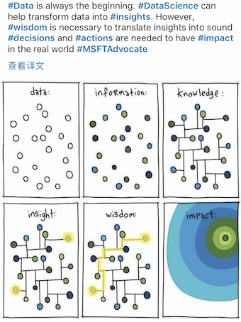
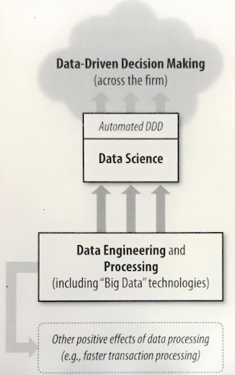
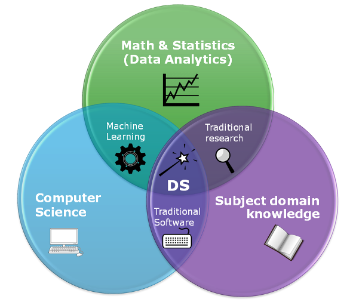
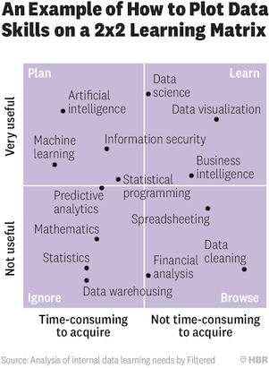

Data Science Basic¶
Data science involves principles, processes, and techniques for understanding phenomena via the (automated) analysis of data. This article talks about the basic part of data science.
Data Driven Decision (DDD)¶
Data-driven decision-making (DDD) refers to the practice of basing decisions on the analysis of data, rather than purely on intuition. DDD is not an all-or-nothing practice, and different firms engage in DDD to greater or lesser degrees.
One standard deviation higher on the DDD scale is associated with a 4%-6% increase in productivity. DDD also is correlated with higher return on assets, return on equity, asset utilization, and market value, and the relationship seems to be causal.
Data and data science capability as a strategic asset¶
Data, and the capability to extract useful knowledge from data, should be regarded as key strategic assets.
Too many businesses regard data analytics as pertaining mainly to realizing value from some existing data, and often without careful regard to whether the business has the appropriate analytical talent. Viewing these as assets allows us to think explicitly about the extent to which one should invest one them. Often, we don’t have exactly the right data to best make decisions and/or the right talent to best support making decisions from the data.
The best data science team can yield little value without the appropriate data; the right data often cannot substantially improve decisions without suitable data science talent.
As with all assets, it is often necessary to make investments. Building a top-notch data science team is a non-trivial undertaking, but can make a huge difference for decision-marking.
Examples¶
Hurricane Frances
New York Times story from 2004.
Hurricane Frances was on its way, barreling across the Caribbean, threatening a direct hit on Florida’s Atlantic coast. Residents made for higher ground, but far away, in Bentonville, Ark., executives at Wal-Mart Stores decided that the situation offered a great opportunity for one of their newest data-driven weapons … predictive technology.
It might be useful to project the amount of increase in sales due to the hurricane, to ensure that local Wal-Marts are properly stocked.
Indeed, that is what happened. The New York Times (Hays, 2004) reported that: “…the experts mined the data and found that the stores would indeed need certain products - and not just the usual flashlights. ‘We didn’t know in the past that strawberry PopTarts increase in sales, like seven times their normal sales rate, ahead of a hurricane, ‘ Ms. Dillman said in a recent interview. ‘And the pre-hurricane top-selling items was beer’
Predicting customer churn
Attracting new customers is much more expensive than retaining existing ones, so a good deal of marketing budget is allocated to prevent churn. How to devise a precise, step-by-step plan for how the data science team should use company vast data resources to decide which customers should be offered the special retention deal prior to the expiration of their contracts.
Target
Like most retailers, Target cares about consumers’ shopping habits, what drives them and what can influence them.
Consumers tend to have inertia in their habits and getting them to change is very difficult. Decision makers at Target knew, however, that the arrival of a new baby in a family is one point where people do change their shopping habits significantly. In the Target analyst’s words, ‘as soon as we get them buying diapers from us, they’re going to start buying everything else too.’ Since most birth records are public, retailers obtain information on births and send out special offers to the new parents.
However, Target wanted to get a jump on their competition. They were interested in whether they could predict that people are expecting a baby. If they could, they would gain an advantage by making offers before their competitors. Using techniques of data science, Target analyzed historical data on customers who later were revealed to have been pregnant, and were able to extract information that could predict which consumers were pregnant. For example, pregnant mothers often change their diets, their wardrobes, their vitamin regiments, and so on.
Data Science Skills¶
Extracting useful knowledge from data to solve business problems can be treated systematically by following a process with reasonably well-defined stages.
Data management¶
Before doing any data analysis, the data need to be well managed.
Normally enterprise data management includes 3 parts:
Governance, Architecture & Modeling (Preparing an Enterprise Data Strategy)
Engineering & Administration (Managing & Working with Data)
Business Intelligence, Analytics & Predictive Modeling (Getting Value from Data)
Examples of Data Governance Policies
Corporate glossary
Naming conventions
Change management
Enterprise data dictionary
Information security
Data project management
Roles in a data governance program
CDO
Data governance director
Data stewards
Subject matter experts (SME)
Enterprise information architect
Data modeler
Extract, Transform, Load¶
ELT tools
Informatica
Syncsort dmx and dmx-h
Microsoft SSIS
IBM infosphere datastage
Talend
Pentaho data integration
Apache camel
For different kinds of data types, the ways to handle them are different.
Master: Customer, Hotel, Sensor
Transactional: Purchase, Check-in, Auto-order
Lookup: Describes codes/IDs, FK relationships, “w” = “work phone”
Metadata: Table data object, Description, Data type = “string”
Data Analysis¶
Data mining The Cross Industry Standard Process for Data Mining, abbreviated CRISP-DM is one codification of this process. Keeping such a process in mind provides a framework to structure our thinking about data analytics problems.
Data profiling
Data profiling refers to dimensions of data quality that can be measured and quantified without considering the intended use of the data. Data profiling techniques are largely generic across applications and do not quantify data quality. Rather, data profiling provides indicators of potential data quality issues and offers a general assessment of data reliability.
Supervised
Decision tree
Naïve bayes classification
Regression
SVM
Unsupervised
Anomaly detection
Clustering
k-means clustering
k-nn (nearest neighbours)
Semi-supervised learning
Besides the above, there are other technologies like Reinforced Learning, Deep Learning, and many others.
Data relevant career¶
For various skills in data science, the following pictures show clearly how useful they are and how easy to learn.
There are different roles relevant to data:
Business understanding
Data Acquisition
Data Cleanup
Modeling Analysis
Deployment
For above:
1, 5: Business Analyst
2, 3: Data engineering
4: Data scientist
Written by Binwei@Singapore